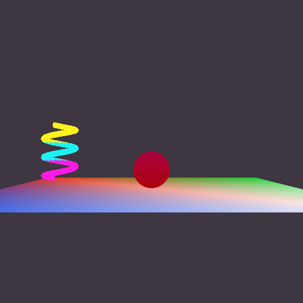
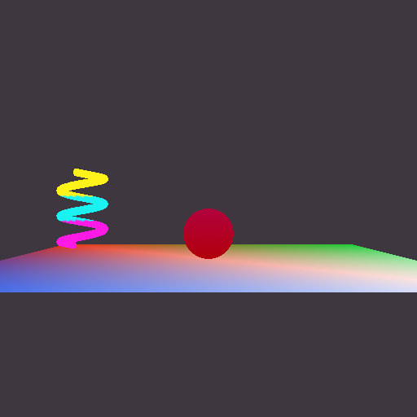
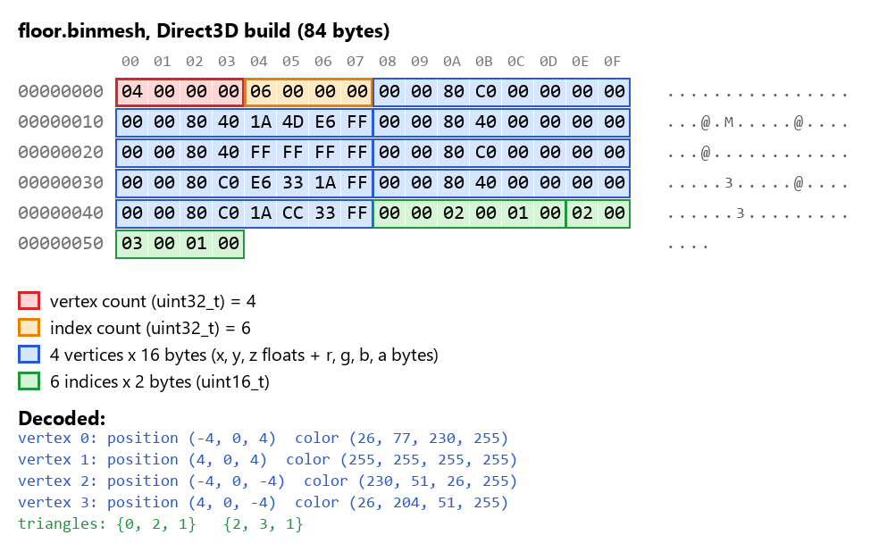
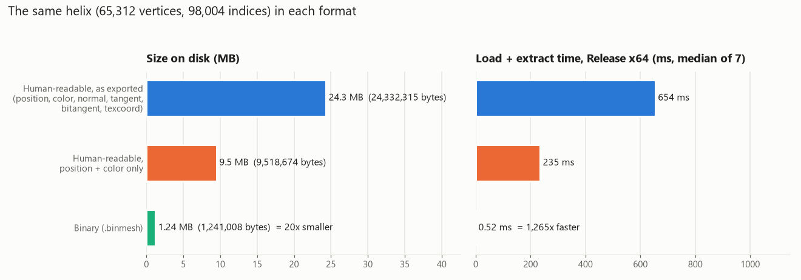
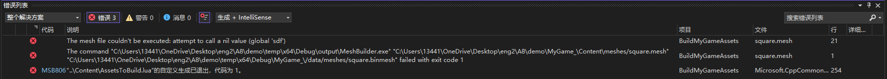
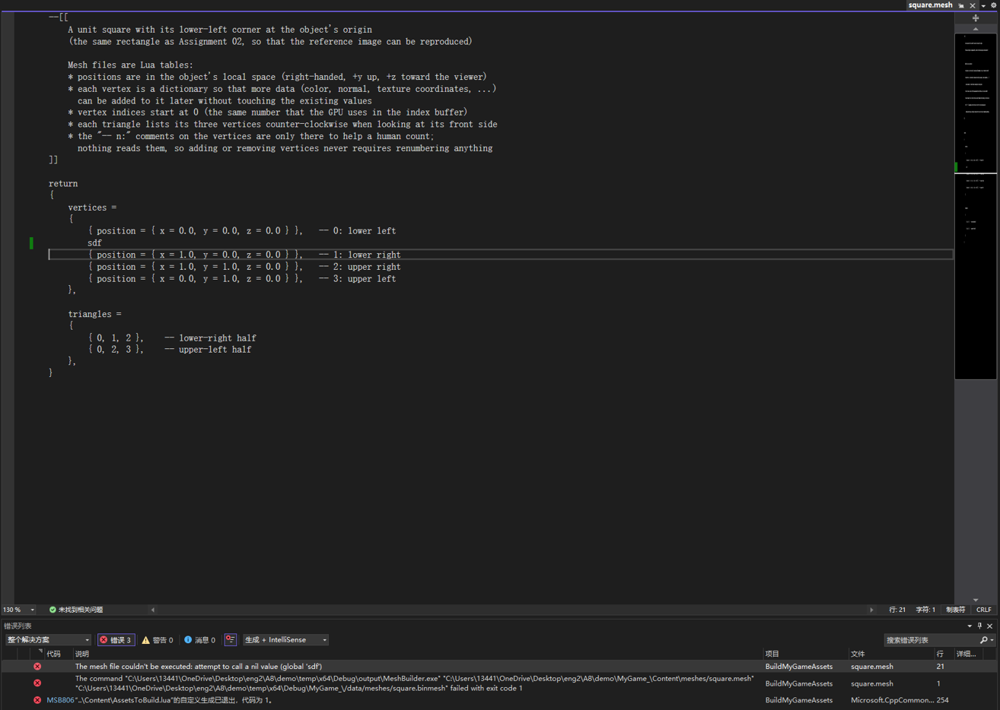

Assignment 08
Binary geometry: the MeshBuilder turns the human-readable mesh files into binary files that the game loads with almost no work
MyGame.exe. ESC closes the game. Arrow keys move the sphere, hold SPACE to give it the triangle mesh, hold SHIFT to draw it with the plain vertex-color effect. W/A/S/D move the camera and Q/E turn it.
Screenshots


What changed
- Reading the human-readable file moved from the game to the MeshBuilder. The Lua code is in its own file,
Tools/MeshBuilder/HumanReadableMesh.cpp: it takes the path of a source .mesh file and gives back two std::vectors (the vertices and the indices), so the code that writes the binary file doesn't know or care that the source was Lua. Instead of logging and asserting, every problem is reported withOutputErrorMessageWithFileInfo(), and when Lua knows the line number (a syntax error, or a typo likesdf) it is passed on, so the Error List shows the file and line. The MeshBuilder now references LuaLib, and the Graphics project no longer does. - The MeshBuilder writes a binary file with exactly four writes (below).
- The game loads the binary file with
Platform::LoadBinaryFile()and finds the four pieces with four pointer calculations. There is no loop anywhere in the mesh loading or initialization code (also the Direct3D index-swapping loop is gone; see the platform section). - Built meshes have their own extension (optional challenge). The mesh asset type in AssetBuildFunctions.lua overrides
ConvertSourceRelativePathToBuiltRelativePath()so thatMeshes/floor.meshis built todata/Meshes/floor.binmesh. Now a path alone says whether it is a source file that people edit or a built file that only the game reads.
// cMeshBuilder.cpp: exactly one write for each of the four pieces of data
// (each array is written as one block, never vertex by vertex or index by index)
const auto vertexCount = static_cast<uint32_t>( i_vertices.size() );
const auto indexCount = static_cast<uint32_t>( i_indices.size() );
fout.write( reinterpret_cast<const char*>( &vertexCount ), sizeof( vertexCount ) );
fout.write( reinterpret_cast<const char*>( &indexCount ), sizeof( indexCount ) );
fout.write( reinterpret_cast<const char*>( i_vertices.data() ), sizeof( i_vertices[0] ) * vertexCount );
fout.write( reinterpret_cast<const char*>( i_indices.data() ), sizeof( i_indices[0] ) * indexCount );A binary mesh file
How to read it (everything is little-endian, so the lowest byte comes first):
- Red, bytes 0-3: the number of vertices as a uint32_t:
04 00 00 00= 4. - Orange, bytes 4-7: the number of indices as a uint32_t:
06 00 00 00= 6 (two triangles). - Blue, bytes 8-71: the vertices, 16 bytes each, exactly the in-memory layout of
sVertex_mesh: three floats for the position and four bytes for the color. In the first vertex,00 00 80 C0is the float -4.0,00 00 00 00is 0.0,00 00 80 40is 4.0, and1A 4D E6 FFis the color (26, 77, 230, 255), which is the (0.1, 0.3, 0.9, 1) from the source file converted to bytes with rounding. - Green, bytes 72-83: the indices, 2 bytes each:
00 00 01 00 02 00is the triangle {0, 1, 2} and02 00 01 00 03 00is {2, 1, 3}.
Why this order. The counts have to come before the arrays: the game can't know where the vertex array ends and the index array begins, or check that the file is complete, until it knows how many there are. That is the one real dependency. Putting both counts first means that one small fixed-size header (8 bytes) describes the whole file, and everything after it can be found by arithmetic. The vertex count comes before the index count simply because the vertices come before the indices.
The arrays are in order of decreasing alignment, which takes care of the alignment optional challenge without any padding. The file is loaded into malloc()ed memory, so it starts aligned for anything. The vertices need 4-byte alignment (floats) and start at offset 8. The indices need 2-byte alignment and start at 8 + 16 x vertexCount, which is always even. Two static_asserts in the MeshBuilder (using alignof) will fail the build if a future change to the vertex struct ever breaks this, at which point padding would be needed.
Why the counts are 32 bits. A uint16_t would save 4 bytes, but it can't hold either number. 16-bit indices can refer to 65536 different vertices (0 to 65535), and 65536 doesn't fit in a uint16_t. The number of indices isn't limited by 16-bit indices at all: the helix I measured below has 65,312 vertices but 98,004 indices. Using explicit sizes (uint32_t, uint16_t) on both the writing and the reading side is what makes the file mean the same thing to both.
Same file on both platforms?
No, but the only difference is the order of the indices, and only because I chose to fix the winding order at build time.

My source files list triangles counter-clockwise (the engine's right-handed convention), but Direct3D treats clockwise triangles as front-facing. Until now cMesh.d3d.cpp made a swapped copy of the indices every time a mesh was loaded. Now the MeshBuilder does the swap once, when it builds a mesh for Direct3D (the MeshBuilder is compiled for each platform, so it can use #if defined( EAE6320_PLATFORM_D3D ) just like the engine). The built file is already in the platform's order, and the run-time hands the indices to the graphics API exactly as they were loaded. This is the kind of work that belongs at build time: it's done once on the developer's machine instead of on every load on every player's machine, and it removed the last loop from the run-time mesh code.
Everything else is identical, and should be. Both platforms use the same sVertex_mesh struct (12 bytes of floats plus 4 color bytes, no padding). Both builds run on little-endian x86/x64 CPUs where float, uint32_t and uint16_t have the same size and byte order. The 32-bit OpenGL build and the 64-bit Direct3D build don't disagree about anything in the file, because it contains only explicitly sized numbers, with no pointers and no size_t. If the engine ever supported a big-endian platform or a different vertex format per platform, the MeshBuilder would be the place to produce a different file for it.
Extracting the data at run-time
This is the important part of cMesh::Load(). Four extractions, no loops, and no copies: the vertex and index pointers point straight into the loaded block, which is passed to the platform-specific Initialize().
// cMesh.cpp: the whole built file is loaded as one block of memory...
Platform::sDataFromFile dataFromFile;
Platform::LoadBinaryFile( i_path, dataFromFile, &errorMessage );
auto currentOffset = reinterpret_cast<uintptr_t>( dataFromFile.data );
const auto finalOffset = currentOffset + dataFromFile.size;
// ...and the four pieces are found in it, in the order they were written
// 1. The number of vertices
const auto vertexCount = *reinterpret_cast<const uint32_t*>( currentOffset );
currentOffset += sizeof( vertexCount );
// 2. The number of indices
const auto indexCount = *reinterpret_cast<const uint32_t*>( currentOffset );
currentOffset += sizeof( indexCount );
// 3. The vertices (used where they are; nothing is copied)
const auto* const vertexData = reinterpret_cast<const VertexFormats::sVertex_mesh*>( currentOffset );
currentOffset += sizeof( vertexData[0] ) * vertexCount;
// 4. The indices
const auto* const indexData = reinterpret_cast<const uint16_t*>( currentOffset );
newMesh->Initialize( vertexData, vertexCount, indexData, indexCount );
// (dataFromFile frees the memory when Load() returns; the graphics API has made its own copy)The real code also checks the data before it trusts the counts. A truncated or corrupt file therefore gives a clear error message and the game exits, instead of reading past the end of the buffer:
// Between steps 2 and 3: the rest of the file must be exactly the two arrays the counts describe
const auto arraysSize = ( static_cast<uint64_t>( vertexCount ) * sizeof( VertexFormats::sVertex_mesh ) )
+ ( static_cast<uint64_t>( indexCount ) * sizeof( uint16_t ) );
if ( ( vertexCount == 0 ) || ( vertexCount > 65536 ) || ( indexCount == 0 ) || ( ( indexCount % 3 ) != 0 )
|| ( arraysSize != ( finalOffset - currentOffset ) ) )
{
// "The mesh file "data/Meshes/floor.binmesh" is invalid: it says it has 4 vertices and 6 indices,
// but its size (50 bytes) doesn't match"
Logging::OutputError( ... );
return Results::InvalidFile;
}Why binary at run-time and human-readable in source control
The two advantages of the binary format:
- It is much smaller. A vertex is 16 bytes in the binary file, the same as in memory, but the same vertex as text (
position = { x = 0.49391, y = -0.780615, z = 1.33821e-09 }, color = { r = 1, g = 0.1, b = 0.9, a = 1 }) is over 100 characters. Smaller files take less disk space, download faster, and take less time to read. - It is much faster to load. Nothing has to be parsed. The bytes on disk are already the bytes that the GPU wants, so loading is one file read plus a few pointer additions. The human-readable file has to be tokenized by Lua, every number converted from decimal text to a float, a Lua table created for every vertex, position, color and triangle, and then my code has to walk all of those tables.
Other benefits follow from the same idea. All the error checking of the source data (missing values, indices out of range, too many vertices) now happens once at build time, where the error can point at the file and line, instead of on every load. The game no longer needs the Lua library to load meshes at all.
The human-readable format has the opposite strengths, and they are the ones that matter for the files people work with. It can be read, reviewed and edited in any text editor. A change shows up as a meaningful line-by-line diff and two people's changes can be merged, while a binary file is an opaque blob to git. It is forgiving (named keys, comments, optional values with defaults), so it survives changes to the engine: when I added color in Assignment 07 the older meshes still worked. The binary file is the opposite: it is exactly one struct layout, and any change to sVertex_mesh makes every existing binary file wrong.
That is why each format is used where it is. The source files in source control are what people create, read, merge and keep for years, so they should be human-readable and robust to change. The built files are generated from them automatically by the build (they live in temp/ and are never committed), so it costs nothing that they are unreadable and tied to the current code: when the format changes, they are simply rebuilt. The player only ever sees the built files, and the player benefits from small files and fast loading.
Measuring the difference
For the measurement I made a helix in Maya with as many vertices as 16-bit indices allow (4 coils, 16 axis subdivisions, 255 subdivisions per coil, which my exporter turns into 65,312 vertices and 32,668 triangles (98,004 indices)) and exported it with my plug-in. It was only used for the measurements and isn't in the repository.

| Format of the same helix | Size on disk | Load + extract time | Compared with binary |
|---|---|---|---|
| Human-readable, as exported (with normals, tangents, bitangents, UVs) | 24,332,315 bytes (24.3 MB) | 654 ms | 19.6x bigger, 1265x slower |
| Human-readable, position + color only | 9,518,674 bytes (9.5 MB) | 235 ms | 7.7x bigger, 454x slower |
| Binary (.binmesh) | 1,241,008 bytes (1.24 MB) | 0.52 ms |
How I measured: the timing code was temporary and has been removed (it is not in the commit), and all times are from Release x64 builds. In the MeshBuilder I started timing right before the Lua file was loaded and stopped right before the binary file was written, so it includes extracting the data from the Lua tables, and printed the result (it shows in Visual Studio's Output window while the assets build). I ran MeshBuilder.exe on the helix 7 times. In the game I started timing right before LoadBinaryFile() and stopped right before Initialize(), and logged the result. I started the game by itself 7 times, without a debugger. The numbers are the medians.
Because my exporter also writes normals, tangents, bitangents and texture coordinates, I also measured a copy of the file with only the position and color, the data that the binary file actually contains. That is the fair comparison of the formats themselves. The human-readable file is still 7.7 times bigger and 454 times slower to load. The full exported file is 20 times bigger and over 1000 times slower.
What this means in practice: two thirds of a second for one mesh is already noticeable, and a real level has hundreds of meshes, so with the human-readable format loading would take minutes instead of a fraction of a second. The binary load is limited only by reading 1.2 MB from disk. The files were in Windows' file cache when I measured, so a cold read from a hard drive would make the 20x size difference matter even more.
Checklist: a typo in a mesh file
I added a line with sdf inside the vertices table of square.mesh and built BuildMyGameAssets. The build fails, and the error appears in Visual Studio's Error List with the mesh file and the line number. Going to the error opens square.mesh at that line. (Lua reports line 21 rather than 20 because sdf { ... } is a function call that continues onto the next line.) A syntax error such as sdf sdf is reported the same way, at line 20, with Lua's message "'}' expected (to close '{' at line 18) near 'sdf'". The file was restored afterwards.


Notes
- All four configurations (Debug/Release, x64/x86) build from an empty temp/ folder with no errors and no warnings. The TA scenario works: building only the game and running it shows the "Initialization failed" message box and exits with code 1, and after building BuildMyGameAssets the game runs.
- The meshes in the game are the ones from Assignment 07, so the optional challenge of a recognizable mesh isn't done, and neither is 32-bit index support. The two optional challenges I did are the .binmesh extension and the padding-free alignment described above.